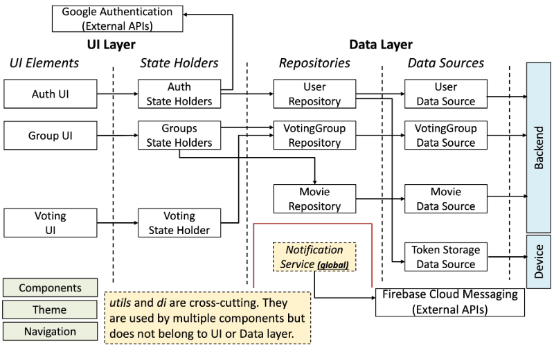
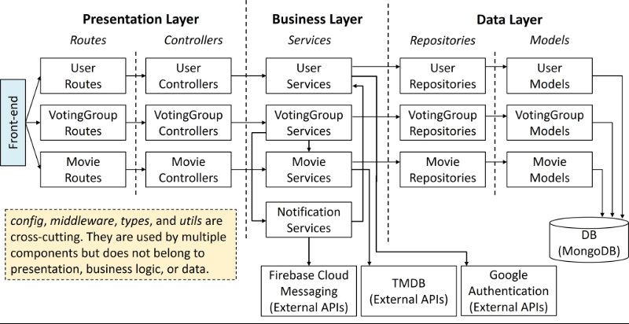

5. RQ2: MovieSwipe Design
Below are the three MovieSwipe app design documents, at different levels of specificity, that we provided to GenAI. At each level, we provided the description of this and all previous levels.
- Project Structure
- Architecture-Level Design
- By-Domain Design
In our experiments, we save these documents as Cursor Rules and use them in scenarios, as required. Cursor will automatically incorporate the rules into its system-level instructions which guide the code generation process. All Cursor Rules we used are available in this zip file.
1. Project Structure
1.1 Structure (Frontend)
The structure of the frontend must comply with the following guidelines:
Kotlin code of the frontend Android application is under frontend/app/src/main/java/com/movieswipe.
- Organize the code by architectural layers into the following packages:
/app
├── /ui # UI layer that presents data and handles user interactions.
│ ├── /ui_elements # UI elements on the screen for each of the features.
│ ├── /stateholders # State holders that hold data, expose this data to the UI, and handle logic.
│ ├── /reusable_ui_elements # UI elements shared between different features.
│ ├── /theme # Theming files that define the app's visual design system including colors, typography, etc.
│ └── /navigation # Screen transitions.
├── /data # Data layer responsible for data access, storage, and management.
│ ├── /datasources # Data stored locally on the device (e.g., access token) or fetched remotely (e.g., backend API calls).
│ └── /repositories # Data abstraction and a uniform interface to access data regardless of where it comes from (local database, remote API, cache, etc.)
├── /di # Hilt dependency injection modules that define how to create and provide dependencies
└── /utils # Common helpers, utilities, constants, and extension functions shared across the app.
- Inside
/uifolder, organize files by the following features: Authentication, Group, and Voting. - Inside
/datafolder, organize files by the following domains: User, VotingGroup, and Movie.
1.2 Structure (Backend)
The structure of the backend must comply with the following guidelines:
Typescript code of the backend Node.js application is under the /backend folder.
- Organize code by architecture layers into the following packages:
├── /src
│ ├── /routes # Define all the endpoints and link them to controllers.
│ ├── /controllers # Handle incoming HTTP requests.
│ ├── /services # Contain the business logic.
│ ├── /repositories # Data access functions.
│ ├── /models # Define the structure of the data (e.g., database schemas).
│ ├── /config # Store configuration such as environment variables or DB settings.
│ ├── /middleware # Functions that process requests and responses before they reach route handlers or after responses are generated. Such functions handle cross-cutting concerns, such as API authentication, logging, input and output validation, etc.
│ ├── /types # Store the shared custom TypeScript type definitions and interfaces.
│ └── /utils # Store the helper or utility functions.
├── /tests # Contains tests.
└── /docs # Store the OpenAPI specification of backend APIs.
- Inside
/routes,/controllers,/services,/repositories,/modelsfolders, organize files by the following domains: User, VotingGroup, and Movie.
2. Architecture-Level Design
2.1 Design (Frontend)
The frontend follows the recommended architecture outlined in the official Android documentation. It consists of an UI layer and Data layer. Each layer can have sub-layers. The architecture is organized as follow:
- UI layer: Consists of UI Elements sub-layer and State Holder sub-layer. UI Elements sub-layer renders data on the screen, consisting of feature-specific UI Elements, reusable UI Components, Theme, and Navigation. Reusable UI Components contain UI elements that are reusable across screens. Theme defines colors, typography, etc. of the app. Navigation manages screen transitions. State Holders sub-layer holds data, exposes the data to the UI, and handles UI logic.
- Data layer: Consists of Repositories sub-layer and Data Sources sub-layer. Data Sources sub-layer defines data that are stored locally on the device local or fetched remotely. Repositories sub-layer specifies the abstraction over data sources.
There are also application-level cross-cutting concerns that apply across layers, including Utils and DI.
Utils defines common helpers, utilities, constants, and extension functions
DI are Hilt dependency injection modules that define how to create and provide dependencies
2.2 Design (Backend)
The backend follows a layered architecture that has Presentation, Business and Data layers. Each layer can have sub-layers. The architecture is overall organized as follow:
- Presentation layer: Consists of the Routes sub-layer and the Controllers sub-layer. Routes sub-layer defines all the endpoints and links them to the Controllers sub-layer. Controllers sub-layer handles incoming HTTP requests.
- Business layer: Contains Services that define the core business logic implementation.
- Data layer: Consists of the Repositories sub-layer and the Models sub-layer. Repositories sub-layer contains data access functions that interact with the database. Models sub-layer defines the structure of the data (e.g., database schemas).
There are also cross-cutting concerns that apply across layers, including Config, Middleware, Types, and Utils.
- Config stores configuration such as environment variables or DB settings.
- Middleware defines functions that process requests and responses before they reach route handlers or after responses are generated. Such functions handle cross-cutting concerns, such as API authentication, logging, input and output validation, etc.
- Types store the shared custom TypeScript type definitions and interfaces.
- Utils store the helper or utility functions.
3. By-Domain Design
3.1 Design (Frontend)
UI Layer Design
The UI layer of the frontend is roughly organized by features of the app:
- Authentication: Allow users to sign in via Google Authentication Service.
- Group: Allow users to view the list and details of groups they own or joined, create/delete a group, and join/leave a group.
- Voting: Allow both owners and members to vote on movies using the swiping gesture.
Data Layer Design
The Data layer of the frontend is organized by domain:
- User domain: Manages user authentication state, authorization tokens, and user data.
- VotingGroup domain: Manages group data, voting session states, membership information, and vote submissions.
- Movie domain: Manages movie data and genre information.
Architecture Diagram
During our experiment, we used Mermaid to implement the frontend architecture diagram.
We provide a rendered image below for better readability. Each box in the diagram represents a component within a specific layer or sub-layer, corresponding to a particular feature in the UI layer or a domain in the Data layer. Each edge indicates a dependency between components.

3.2 Design (Backend)
By-Domain Design
Each backend layer and sub-layer is structured around the following domains:
- User domain: Manages user authentication, user data, and integration with Google Authentication Service .
- VotingGroup domain: Manages groups, memberships, and collective movie selection through voting sessions.
- Movie domain: Manages movie data, genre information, and integration with TMDB APIs.
Architecture Diagram
During our experiment, we used Mermaid to implement the backend architecture diagram.
Here, we provide a rendered image for better readability. Each box in the diagram represents a component in a specific layer or sub-layer for a specific domain. Each edge represents a dependency between the components.
